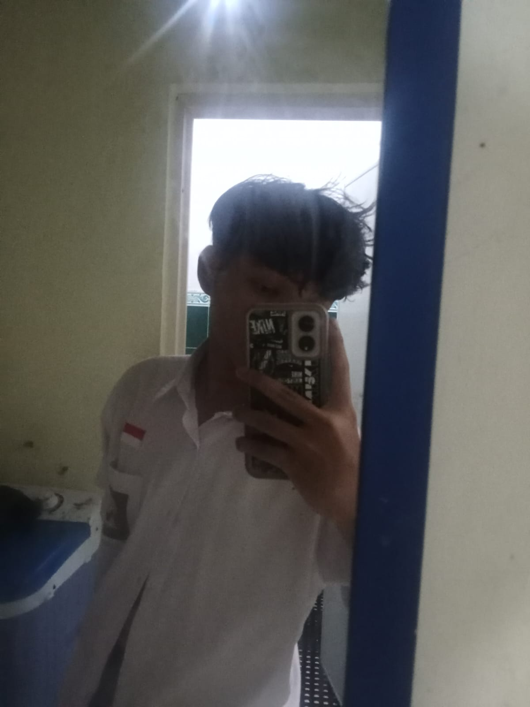

Web Developer & Software Engineer yang berdedikasi pada kualitas dan detail.

Saya seorang software engineer yang berfokus pada pengembangan aplikasi web dan perancangan sistem. Saya memiliki ketertarikan besar pada desain UI/UX dan pengembangan backend, mulai dari perancangan arsitektur hingga implementasi solusi yang scalable.
Saya percaya bahwa teknologi terbaik adalah yang menggabungkan fungsi dan estetika. Oleh karena itu, saya selalu berusaha menghadirkan solusi digital yang tidak hanya bekerja dengan baik, tetapi juga nyaman digunakan.
Ketika tidak sedang bekerja, saya senang belajar teknologi baru, berkontribusi pada komunitas, dan mengembangkan proyek personal.
Selalu mencari solusi kreatif untuk setiap tantangan yang dihadapi.
Berfokus pada detail dan kualitas dalam setiap hasil kerja.
Membangun komunikasi yang baik dengan klien dan tim.
Terus mengikuti perkembangan teknologi terbaru.